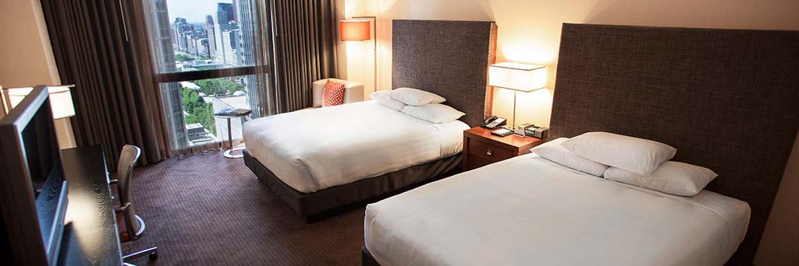
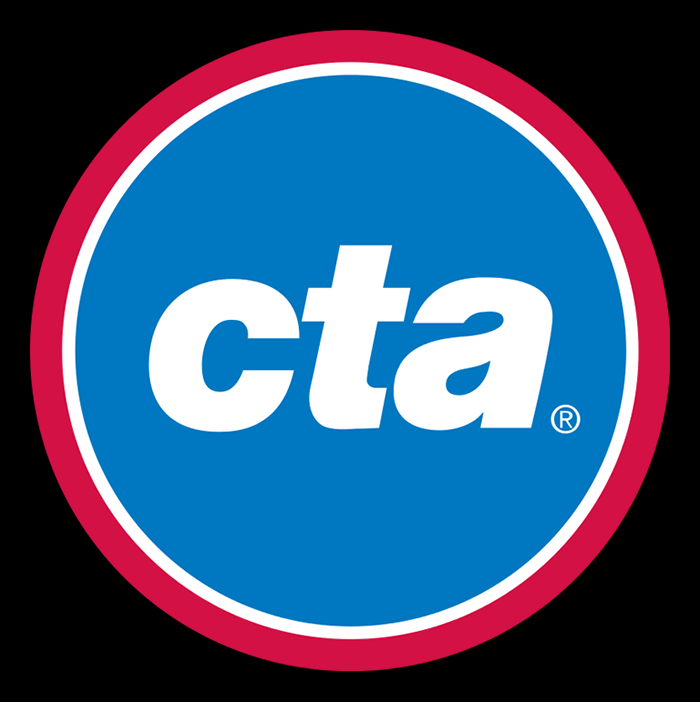
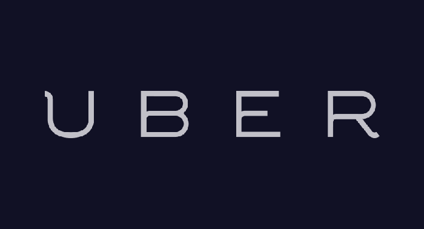

Registration
Registration for Combustion:
Players - $40 (U.S.)
Supporters/Non-Players - $25 (U.S.)
Helpful items for the registration process:
- Early registration ends on Wednesday, April 30, 2015
- If registering individually, note your team affiliation in PayPal
- If registering an entire team, note the number of players and supporters in PayPal and the Tournament Committee will reach out to you for detailed roster information
- You must be able to provide proof of good standing with your national rugby office (U.S.A. Rugby, etc.)
- You must present a current form of photo identification upon registration check in
- Each team will have a dedicated registration contact to facilitate the check in process
- Anyone whose team isn’t attending Combustion or squads with less than 8 players will be placed in a pipeline of unaffiliated players who will either be made into a separate team, or allocated to a team in need of more players
Tournament Play
The Combustion tournament will take place Saturday, May 23rd at Diversey Harbor. A 20 minute train ride, or 10 minute Uber ride away from the Hyatt Regency, Diversey Harbor’s fields are right on the cusp of Lake Michigan, offering a fantastic view and refreshing breeze that will cool down the hottest summer days, creating the perfect conditions for rugby.
Tournament play for Combustion will be conducted in the same manner as Regional IGR Tournaments and the Bingham Cup:
- Tournament play will be only on Saturday
- Bracket placement will be determined by random draw at the Friday Meet and Greet
- 20 minute halves with a 5 minute halftime
- Rosters will be capped at 25 players
- Each team is allowed 7 permanent subs
- Each pitch will have a referee from our local union, two match balls, and a dedicated administrator
- Match statistics will be kept for each match in accordance with U.S.A. Rugby’s Competition Management Handbook
The bracket schedule will be posted soon based on eight expected teams. While every effort will be made to stay on schedule, some adjustments may have to be made based on final number of players and teams, etc. The Combustion Committee will coordinate all changes to the team captains in a timely manner.
Lodging & Transportation
The Hyatt Regency

The Hyatt Regency Chicago will play host to Combustion attendees as well as our registration and opening ceremonies. This rate will allow a player to be housed during the Bingham Cup for as low as $50 a night with quad occupancy. Located in the heart of Chicago’s downtown, athletes and supporters are a short ride away from Combustion social and tournament events as well as tourist sites and events such as International Mr. Leather!
RESERVE YOUR SPACE NOW: resweb.passkey.com/go/GRCMAY2015 »
Reservations may be made, modified or canceled by individuals on-line. Individuals will also be able to make reservations by calling Central Reservations at 1-888-421-1442, and referring to the Hyatt Regency Chicago, the dates of stay, and the “GRC May 2015 Room Block”.
Reservations must be received on or before the cut-off date, May 1st, 2015.
Transportation
 With the CTA train system, Chicago is one of the easiest cities to get around! For $20, attendees can purchase a 3-day pass that allows for unlimited travel around the city via train and bus.
 But we’ve made it even easier. Participants of Combustion Chicago will receive an exclusive $5 discount on all UBER and UBER X rides around the city.
Socials & Other Events
We know you’re not just coming for rugby. With Bear Pride, IML, and a 3 day weekend ahead we’re making sure you get your rugby on and have plenty to do before and after. We’ve planned an entire weekend for you while making sure we’re not cutting into any other *ehem* extracurriculars. While venues and events are still being developed, here’s our schedule and recommended events to attend.
Our planning committee is putting together a fantastic schedule of social events to accompany our tournament. Starting with registration on Friday, May 22nd, tournament attendees will begin the registration process. As a courtesy to all players and supporters, we will be giving away complimentary t-shirts and swag bags, all branded with sponsor logos. Bracket positions will be drawn at random for the coming competition.
Saturday, May 23rd, is when the tournament begins. Starting at 9:00 AM, teams will arrive to our player’s villiage and prepare for a day of hard-fought rugby. The players villiage will also host an array of resources for the athletes and supporters including an opperations tent, food tent where complementary lunches will be served, and a physical therapy tent where athletes can recieve massages and treatment for any potential minor injuries. Following the tournament will be a “3rd Half” celebration party where winning teams will be awarded along with a number of other rugby traditions.
Rugby players and supporters will be supporting a number of local Chicago businesses on Sunday, May 24th, durring an encouraged DIY brunch. Chicago Dragons will provide tournament attendees with some of our favorite brunch locations in the city. Following brunch, the tournament will host an informal Hollywood Beach Takeover. Tournament players and supporters are encouraged to bring their own supplies and be prepared for an afternoon of food and activities.